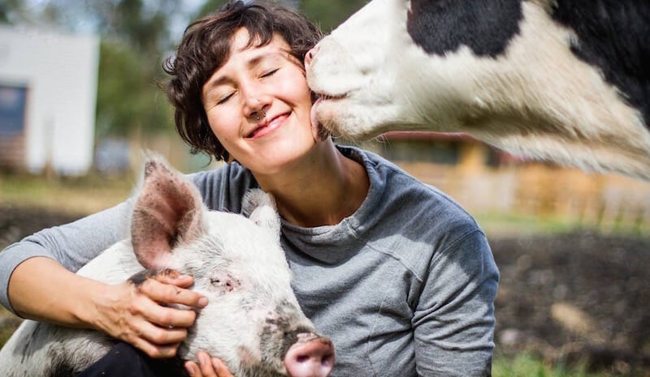

<!doctype html>
<html lang="en">
  <head>
    <meta charset="UTF-8" />
    <meta name="viewport" content="width=device-width, initial-scale=1.0" />
    <title>Vida Sana | Healthy Vegan Living</title>

    <link
      href="https://cdn.jsdelivr.net/npm/bootstrap@5.3.3/dist/css/bootstrap.min.css"
      rel="stylesheet"
    />
    <link rel="stylesheet" href="../css/main.css" />
  </head>
</html>
<body>
  <!-- Navbar -->
<nav class="navbar navbar-expand-lg navbar-light shadow-sm sticky-top vs-navbar">
  <div class="container vs-navbar-wrap">

    <!-- Logo -->
    <a class="navbar-brand fw-bold vs-brand" href="index.html">Vida Sana</a>

    <!-- Toggle Button (Mobile) -->
    <button
      class="navbar-toggler"
      type="button"
      data-bs-toggle="collapse"
      data-bs-target="#navbarNav"
    >
      <span class="navbar-toggler-icon"></span>
    </button>

    <!-- Nav Links -->
    <div class="collapse navbar-collapse vs-navbar-collapse" id="navbarNav">
      <ul class="navbar-nav vs-navbar-links">

        <li class="nav-item">
          <a class="nav-link custom vs-nav-link active" href="#">Home</a>
        </li>

        <li class="nav-item">
          <a class="nav-link custom-nav-link" href="#">Calculator</a>
        </li>

        <li class="nav-item">
          <a class="nav-link custom-nav-link" href="#">Recommendations</a>
        </li>

        <li class="nav-item">
          <a class="nav-link custom-nav-link" href="#">Foods</a>
        </li>

        <li class="nav-item">
          <a class="nav-link custom-nav-link" href="replacements.html">
            Replacements
          </a>
        </li>

        <!-- Button -->
        <li class="nav-item vs-navbar-action">
          <a class="btn vs-btn-nav" href="#">Get Started</a>
        </li>

      </ul>
    </div>
  </div>
</nav>
  <!-- Hero Section -->
  <section class="vs-hero d-flex align-items-center">
    <div class="container">
      <div class="row align-items-center gy-5">
        <div class="col-lg-6">
          <p class="vs-hero-eyebrow mb-2">
            Compassion in <span>Every Meal</span>
          </p>
          <h1 class="vs-hero-title mb-3">Your guide to a healthier vegan transition</h1>
          <p class="vs-hero-subtitle mb-4">
            Vida Sana helps you understand calorie needs, key nutrients to
            watch, plant-based food options, and healthier vegan replacements —
            all in one place.
          </p>
          <div class="d-flex flex-wrap gap-3">
            <a href="#" class="btn vs-btn-primary">Start Your Journey</a>
            <a href="#" class="btn vs-btn-secondary">Explore Foods</a>
          </div>
        </div>

        <div class="col-lg-6">
          <div
            class="hero-image-placeholder rounded-4 shadow-sm d-flex align-items-center justify-content-center"
          >
            
          </div>
        </div>
      </div>
    </div>
  </section>

      <!-- New Section: Helpful Resources -->
<section class="vs-info-cards">
  <div class="container">
    <div class="text-center mb-4">
      <h2 class="fw-bold vs-section-title">Helpful Resources</h2>
      <p class="text-muted mx-auto vs-section-subtitle">
        Use search, tips, and simple reminders to make your vegan transition easier and healthier.
      </p>
    </div>

    <div class="row g-4">
      <!-- Card 1 -->
      <div class="col-md-6 col-lg-4">
        <div class="vs-info-card h-100">
          <div class="vs-info-icon" aria-hidden="true">
            <span class="vs-info-emoji">🔎</span>
          </div>
          <h5 class="vs-info-title">Search &amp; Filters</h5>
          <p class="vs-info-text">
            Search foods and filter by category (dairy, protein, baking, sweeteners).
          </p>
        </div>
      </div>

      <!-- Card 2 -->
      <div class="col-md-6 col-lg-4">
        <div class="vs-info-card h-100">
          <div class="vs-info-icon" aria-hidden="true">
            <span class="vs-info-emoji">💡</span>
          </div>
          <h5 class="vs-info-title">Beginner Tips</h5>
          <p class="vs-info-text">
            Practical tips for labels, fortified foods, allergies, and starting simple.
          </p>
        </div>
      </div>

      <!-- Card 3 -->
      <div class="col-md-6 col-lg-4">
        <div class="vs-info-card h-100">
          <div class="vs-info-icon" aria-hidden="true">
            <span class="vs-info-emoji">🧠</span>
          </div>
          <h5 class="vs-info-title">Healthy Balance Reminders</h5>
          <p class="vs-info-text">
            Gentle reminders like B12, protein balance, and mindful choices (not medical).
          </p>
        </div>
      </div>
    </div>
  </div>
</section>

  <!-- Why Vida Sana -->
  <section class="py-5 vs-replacements">
    <div class="container">
      <div class="text-center mb-5">
        <h2 class="fw-bold">Why Vida Sana?</h2>
        <p class="text-muted mx-auto section-text">
          Transitioning to a vegan diet can feel overwhelming. Vida Sana makes
          it easier by helping users understand nutrition, calorie needs, and
          plant-based alternatives.
        </p>
      </div>

      <div class="row g-4">
        <div class="col-md-6 col-lg-3">
          <div class="feature-card h-100 p-4 rounded-4 shadow-sm">
            <h5 class="fw-semibold">Calorie Guidance</h5>
            <p class="text-muted mb-0">
              Estimate daily calorie needs based on personal details and goals.
            </p>
            <div class="vs-thumb" aria-hidden="true">
                <span class="vs-thumb-emoji">⚖️</span>
            </div>
            <div class="vs-thumb vs-thumb-home" aria-hidden="true">
              
            </div>
          </div>
        </div>

        <div class="col-md-6 col-lg-3">
          <div class="feature-card h-100 p-4 rounded-4 shadow-sm">
            <h5 class="fw-semibold">Nutrients to Watch</h5>
            <p class="text-muted mb-0">
              Learn about important nutrients like B12, iron, calcium, &
              omega-3.
            </p>
            <div class="vs-thumb" aria-hidden="true">
                <span class="vs-thumb-emoji">💊</span>
            </div>
            <div class="vs-thumb vs-thumb-home" aria-hidden="true">
              
            </div>
          </div>
        </div>

        <div class="col-md-6 col-lg-3">
          <div class="feature-card h-100 p-4 rounded-4 shadow-sm">
            <h5 class="fw-semibold">Food Suggestions</h5>
            <p class="text-muted mb-0">
              Discover vegan food options that match your nutritional needs.
            </p>
            <div class="vs-thumb" aria-hidden="true">
                <span class="vs-thumb-emoji">🥗</span>
            </div>
            <div class="vs-thumb vs-thumb-home" aria-hidden="true">
              
            </div>
          </div>
        </div>

        <div class="col-md-6 col-lg-3">
          <div class="feature-card h-100 p-4 rounded-4 shadow-sm">
            <h5 class="fw-semibold">Easy Replacements</h5>
            <p class="text-muted mb-0">
              Find plant-based alternatives for common non-vegan foods.
            </p>
            <div class="vs-thumb" aria-hidden="true">
                <span class="vs-thumb-emoji">🔁</span>
            </div>
            <div class="vs-thumb vs-thumb-home" aria-hidden="true">
              
            </div>
          </div>
        </div>
      </div>
    </div>
  </section>
  <!-- Nutrients Section -->
  <section class="py-5 vs-replacements">
    <div class="container">
      <div class="row align-items-center gy-4">
        <div class="col-lg-6">
          <h2 class="fw-bold mb-3">
            Nutrients to Watch During Vegan Transition
          </h2>
          <p class="text-muted">
            Many beginners are unaware of nutrients that need careful planning
            when moving to a vegan diet. Vida Sana highlights important
            nutrients and shows plant-based sources to help users make informed
            choices.
          </p>
          <ul class="list-unstyled nutrient-list">
            <li>Vitamin B12</li>
            <li>Iron</li>
            <li>Calcium</li>
            <li>Vitamin D</li>
            <li>Omega-3</li>
            <li>Iodine</li>
            <li>Protein</li>
            <li>Selenium</li>
          </ul>
        </div>

        <div class="col-lg-6">
          <div class="info-box rounded-4 shadow-sm p-4">
            <h5 class="fw-semibold mb-3">Important Note</h5>
            <p class="text-muted mb-0">
              Vida Sana provides educational nutrition guidance and is not a
              substitute for medical advice, diagnosis, or treatment.
            </p>
          </div>
        </div>
      </div>
    </div>
  </section>

  <!-- How It Works -->
  <section class="py-5 vs-replacements">
    <div class="container">
      <div class="text-center mb-5">
        <h2 class="fw-bold">How It Works</h2>
      </div>

      <div class="row g-4">
        <div class="col-md-4">
          <div class="step-card text-center p-4 rounded-4 shadow-sm h-100">
            <div class="step-number mb-3">1</div>
            <h5 class="fw-semibold">Enter Your Details</h5>
            <p class="text-muted mb-0">
              Add age, height, weight, activity level, goals, and food
              restrictions.
            </p>
          </div>
        </div>

        <div class="col-md-4">
          <div class="step-card text-center p-4 rounded-4 shadow-sm h-100">
            <div class="step-number mb-3">2</div>
            <h5 class="fw-semibold">Get Personalized Insights</h5>
            <p class="text-muted mb-0">
              View calorie estimates, important nutrients, and relevant food
              suggestions.
            </p>
          </div>
        </div>

        <div class="col-md-4">
          <div class="step-card text-center p-4 rounded-4 shadow-sm h-100">
            <div class="step-number mb-3">3</div>
            <h5 class="fw-semibold">Build Better Habits</h5>
            <p class="text-muted mb-0">
              Use food guidance and vegan replacements to transition with
              confidence.
            </p>
          </div>
        </div>
      </div>
    </div>
  </section>
  <!-- CTA Section -->
  <section class="py-5 cta-section text-white">
    <div class="container text-center">
      <h2 class="fw-bold mb-3">Start your healthy vegan journey today</h2>
      <p class="mb-4">
        Get the nutrition guidance you need to transition confidently and
        sustainably.
      </p>
      <a href="#" class="btn btn-light btn-lg px-4">Get Started</a>
    </div>
  </section>

  <!-- Footer -->
  <footer class="vs-footer">
    <div class="container text-center">
      <p class="mb-0 text-muted">© 2026 Vida Sana. All rights reserved.</p>
    </div>
  </footer>

  <script src="https://cdn.jsdelivr.net/npm/bootstrap@5.3.3/dist/js/bootstrap.bundle.min.js"></script>
  <script src="../js/main.js"></script>
</body>
